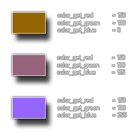

colour_get_blue(col);
| Argument | La description |
|---|---|
| col | La couleur à vérifier |
Retours: Real
Cette fonction renvoie la quantité de bleu utilisée pour rendre la couleur donnée, la valeur étant comprise entre 0 et 255, où 0 n'est pas bleu et 255 est tout bleu. L'image suivante illustre ceci: 
b_comp = colour_get_blue(c_teal);
Le code ci-dessus obtiendra le composant bleu de la constante de couleur "c_teal" et stockera la valeur dans la variable "b_comp".